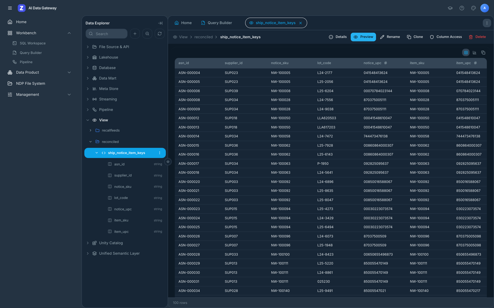
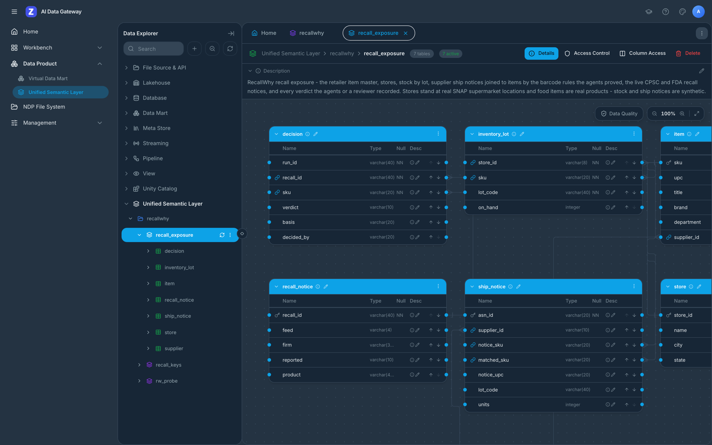
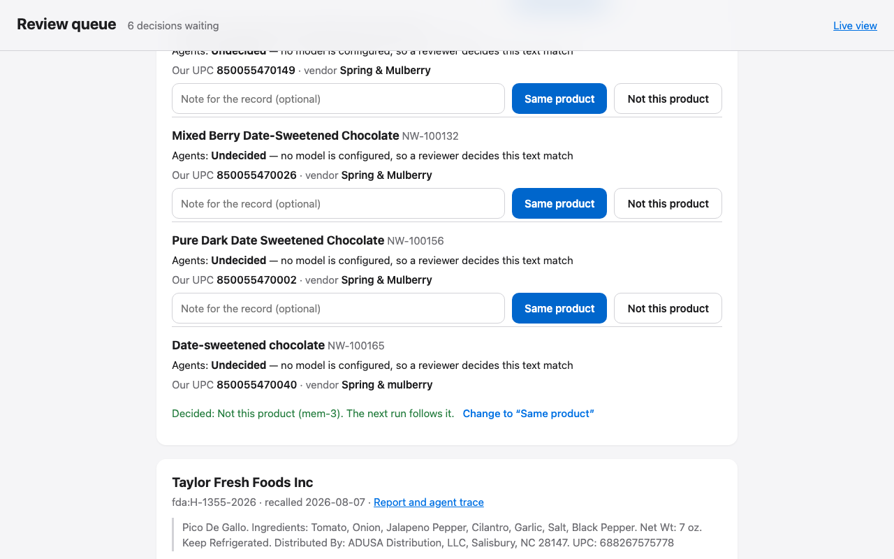
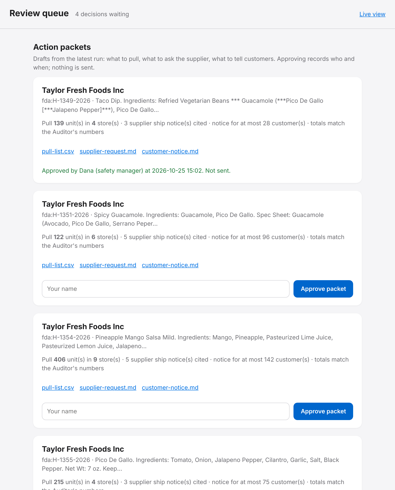
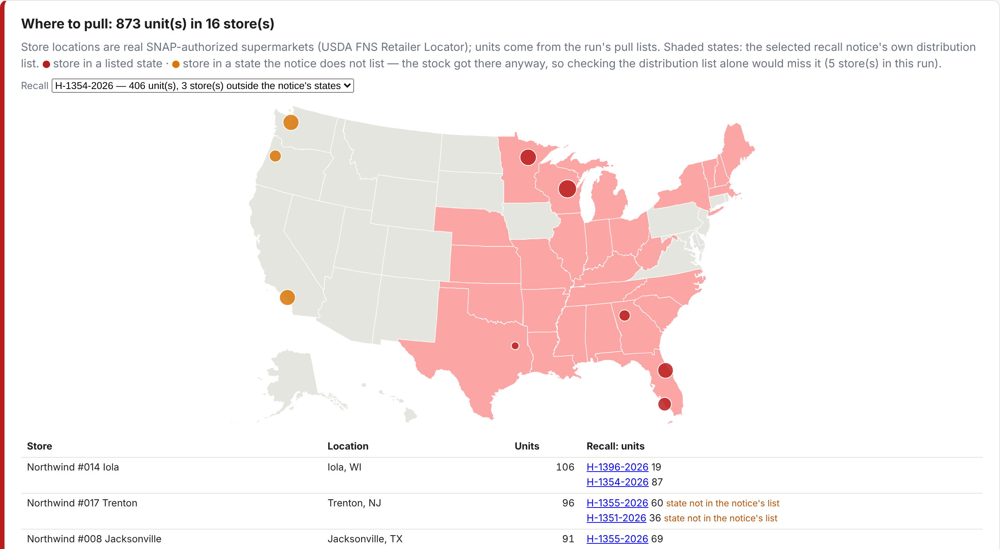

Open Agent Hackathon 2026 · Track 1 — Solving Fragmented Intelligence
RecallWhy
Agents that tell a retailer which recalled products are on its shelves, which lots, which stores, how many customers to call — and why they believe it.
Zetaris federated SQL · Meterless H-MEM + World Model + Markovian · Meterless Nightshift · NVIDIA Nemotron 3 Ultra + 3.5 Lightning · real products from USDA FoodData Central and Open Food Facts
1 · Problem and users
Over 500 federal recall notices since July.
Each one is a manual cross-check.
A regional retailer's product-safety / QA manager reads every CPSC and FDA notice and must answer:
- Do we sell this — or something that only looks like it?
- Which lots? Which stores still hold them?
- How many customers bought it since the recall began?
- Who supplied it?
Dec 2025: FDA warning letters to Kroger, Albertsons, Target and Walmart — recalled infant formula still on shelves in 175+ locations across 36 states, up to three weeks. Staff cited "confusion regarding which specific lots were affected."
184 + 333
CPSC recalls and FDA food enforcement reports, 1 Jul – 21 Oct 2026 (snapshot of 22 Oct in sample/; RecallWhy reads the same feeds live)
The answers live in four systems that were never meant to meet — two recall feeds, the ERP and the supplier portal — each writing a product its own way: UPC-12 in the ERP, GTIN-14 from a third of suppliers, digits buried in notice text. A wrong "not ours" leaves a contaminated lot on the shelf; a wrong "ours" pulls good stock.
2 · Solution
Five agents map the fragments, then investigate every recall and return a verdict with its evidence.
Cartographer
Lists every Zetaris source and column, profiles identifiers, tests cross-source joins. Finds the GTIN-14 suppliers upfront. When the Auditor hits rows the key can't reach, it diagnoses that supplier, tests the fix on all its ship notices, and corrects the map.
Scout
Reads both live feeds and the item master through Zetaris; one federated UPC sweep; opens a case per recall that touches the catalog.
Investigator
UPC / model rules, Nemotron judge for text matches, lot codes, prior decisions from H-MEM, exposure by store and lot with federated SQL.
Auditor
Can block. Re-checks the live notice, quotes and lots verbatim, re-derives every number with its own SQL, checks each brief sentence. ≤2 revisions, then a human.
Briefer
Writes only from the World Model context: numbered evidence, each with the SQL or model call behind it. Then the action packet and the weekly digest.
ACT NOWNOTIFYNO EXPOSURENOT OURSNEEDS HUMAN
3 · Architecture
Every agent reads data only through Zetaris.
CPSC Recall API
REST · JSON array
openFDA enforcement
REST · JSON
ERP Postgres
JDBC · real food items, synthetic stock
Supplier portal
JDBC · synthetic
→
Zetaris
Lightning SQL
REST tables · schemastore views
JDBC datasources · federated joins
→
Cartographer
→
Scout
→
Investigator
⇄
Auditor
→
Briefer
Auditor → Cartographer: barcode rows the map can't reach · Cartographer → Auditor: corrected map
Meterless H-MEM
every decision, trust 0.6 agent / 0.95 human
Meterless World Model
facts + provenance → ContextBuilder
Meterless Nightshift → NVIDIA Nemotron 3 Ultra 550B + 3.5 Lightning
one injected generator · Ultra: judge, why-paragraph, Auditor check, digest · Lightning: lot reader (checked word for word) · routed model + receipt on every call
Meterless Markovian
weekly digest over every case, bounded chunks + carryover
action packets · report.html · trace.jsonl · review queue
4 · Stack
Small, typed, runnable from a clean clone.
| Layer | What |
|---|
| Data access | Zetaris Lightning SQL over its REST API (/api/proxy/sql-editor/sqls/run-query) |
| Agents | TypeScript on Node 22, no agent framework — five agents, one orchestrator, one trace |
| Memory, state, long reads | Meterless H-MEM, World Model and Markovian reference engines (Apache-2.0), mounted in src/engines/ |
| Model | Meterless Nightshift Runtime API (OpenAI-compatible) → NVIDIA Nemotron 3 Ultra 550B-A55B (judge, briefs, Auditor check, digest) + Nemotron 3.5 Lightning 30B-A3B (lot codes); no model and a human queue when Nightshift is absent |
| Retailer data | Postgres 16 in Docker — food items are real products (USDA FoodData Central, Open Food Facts: 95 recalled, 86 same-brand, 260 more); stores at real SNAP-authorized supermarket locations (USDA FNS); stock, sales and ship notices synthetic |
| Entry points | POST /run · POST /approve API · Dockerfile · CLI · live trace viewer · review screen |
| No-credential mode | SAMPLE_MODE=true: same agents and SQL on an in-process DuckDB stand-in, labelled SAMPLE |
| Development | Cursor (agent scaffolding, generator, SQL layer, tests) · 113 tests incl. Meterless engine tests |
5 · How Zetaris and Meterless are used
Load-bearing, not bolted on.
Zetaris
• Cartographer maps sources with Zetaris's catalog: SHOW DATASOURCES, DESCRIBE DATASOURCE TABLE, SHOW LIGHTNING DATABASES → profiles and join tests
• 2 live Lightning REST tables → schemastore views
• 2 JDBC datasources (ERP, supplier portal)
• Scout: REST × JDBC join — live FDA notice digits ⋈ ERP UPCs
• Investigator: ship notices ⋈ suppliers ⋈ ERP item master
• Auditor: re-queries the live notice and re-aggregates every number itself
• Writes back: a proven supplier rule becomes the view reconciled.ship_notice_item_keys, checked with INFER SQLTABLE SOURCES and RUN DQ (0 invalid)
• Setup is code: npm run setup:zetaris
Meterless
• H-MEM: every adjudication stored with trust; human decisions (0.95) are followed on the next run; audited agent decisions are reused without a model call; trust ledger logs reads/writes
• World Model: recalls, cases, findings as facts; every write carries provenance (agent, SQL id, model call)
• ContextBuilder is the Briefer's only input — it cannot cite what the team didn't establish
• Markovian: the weekly digest reads every case of a run in bounded chunks with a compressed carryover (≤256 tokens)
• Nightshift is the primary AI provider: every model call, with its receipt and routed model in the trace
• Engines byte-identical to Meterless@1742dec and green on the upstream conformance suites (13/13, 8/8, 8/8) in CI
• Scout Intent: signed execution contracts on every write; injection guard 10/10 on Scout's adversarial set
5b · One live recall, end to end
A live FDA notice to a pull list, through Zetaris.
H-0007-2027, Mezzetta Golden Greek peperoncini, read from the live feed on 26 Oct:
- Scout reads the live FDA feed through Zetaris (REST) and sweeps it against the ERP (JDBC): our UPC 073214003280 is printed in the notice.
- Investigator: Nemotron 3 Ultra dismisses a look-alike Mezzetta pasta sauce, Nemotron 3.5 Lightning reads lot 720106; SQL: 12 units on hand in 2 stores, one in NY, which the notice does not list.
- Auditor blocks the shortcut: the supplier's ship notices reach the lot by SKU, 0 by barcode → sends the rows to the Cartographer.
- Cartographer: SUP007 drops the check digit — proven on 458 of 458 ship notices, written back to Zetaris with lineage + DQ rule 0 invalid; the USL key now reaches 12,554 of 14,244. Two rules from earlier runs were re-proven first.
- Auditor re-derives every number with its own SQL → approved. Packet: pull 12 units in 2 stores, supplier request, notice for at most 12 customers. A person approves; nothing is sent.
Trace: examples/output/example_4/trace.jsonl, seq 104–170. The whole run, 39 live notices to 5 packets: 4 min 9 s.

The corrected join in Zetaris's own Data Explorer: reconciled.ship_notice_item_keys, where suppliers' 11-digit barcodes now meet our 12-digit UPCs. Any Zetaris user can query it.
5c · A governed model in Zetaris
The joins the agents rely on, as keys Zetaris checks.

USL recall_exposure in Zetaris's Data Explorer: 7 tables, all active, described, with primary and foreign keys and 18 data-quality rules.
- The barcode key
ship_notice.matched_sku → item: after every map correction the Cartographer re-binds it and Zetaris's DQ engine counts the ship notices no proven rule reaches — 1,690 of 14,244 after three proven rules, all from five suppliers, named one by one.
- Every other key holds: items → suppliers 900/900, stock → stores and items 14,982/14,982, ship notices → items 14,244/14,244.
- Verdicts go back in: each run writes its verdicts as
reconciled.case_verdicts; Zetaris checks each points at a live notice and an item we carry; the next run reads them and flags a change.
- Every write is signed: a Meterless Scout Intent execution contract names the exact views and tables it may change, single-use, 5-minute expiry.
6 · What's unique
Map the fragments first. Then trust no one — including the model.
- The map is a hypothesis the Auditor can send back. Rows the key can't reach go to the Cartographer, which learns the supplier's rule (padding, dropped check digit) and proves it on all that supplier's ship notices.
- The model proposes, SQL proves. For a format the code has no rule for (a 10-digit core), Nemotron 3 Ultra proposes a transform from sampled pairs in a fixed op set; it is adopted only if it holds on every one of the supplier's rows (193 to 390 rows, four suppliers), then written back to Zetaris and checked by its lineage and data-quality rule. Judge off: 89 of 146 caught with known rules, 99 with proposals, 53 without the Cartographer.
- The Auditor re-derives every number in Zetaris with differently written SQL; a mismatch blocks the brief.
- "Cheese ≠ pepperoni": a quote can be copied from the notice and still describe another variety — every product word of our item must appear in the notice. An earlier live run: blocked, re-judged, ruled not ours.
- And the other way: the judge dismissed our Taylor Farms "Salsa Fresca" while quoting "Tomato Salsa Fresca" — every word of ours is in its own quote, so the Auditor sends it to a person (live run, example_1).
- What the model writes is checked too: lot codes must appear verbatim in the notice, and every brief sentence must be supported by the evidence it cites, or it is rewritten.
- Human decisions change the next run through H-MEM; a changed verdict is flagged against Zetaris.
7 · Product

Each case opens with what the agents did (here: a supplier rule proven by SQL on 391/391 and written back to Zetaris), then the cited brief and the trace.

Review screen on a live run's queue: the Auditor's objection to a dismissal, and the decision a person records in Meterless H-MEM. Same screen on the site, no install.
7b · The work it hands on
Every recall with our stock ends in a packet a person approves.
pull-list.csv
One row per store and lot: store, city, item, UPC, lot, units. Withheld unless it adds up to the on-hand number the Auditor re-derived with its own SQL.
supplier-request.md
Credit and replacement request citing the supplier's own ship notices (ASN, lot, date, units), one per supplier.
customer-notice.md
For loyalty customers who bought affected lots — a count; the loyalty system resolves who. Reason quoted from the notice.

Review screen: drafts from the latest run, approved with a name and a time. Nothing is sent. Plus digest.md: what needs the manager first, read through Markovian.
7c · Where to pull
Every pull list on a map of real store locations.

The 24 stores stand at real SNAP-authorized supermarkets (USDA FNS). Shaded: the recall notice's own distribution states. Amber: stock in a state the notice does not list — a check by distribution list alone misses it. Try the review screen with no install: mikey92.github.io/recallwhy/review.html
8 · Results
134 of 146 recalled items caught, 1 missed, 1 false alarm — on real products.
| Setup (322 recall/SKU pairs) | Caught (of 146) | Wrongly dismissed | False alarms (of 176) | To human |
|---|
| No Cartographer — rules only | 53 | 0 | 0 | 269 |
| Cartographer, known rules only | 89 | 0 | 0 | 233 |
| Cartographer + model-proposed transforms (no judge) | 99 | 0 | 0 | 223 |
| Full system: Cartographer + Nemotron 3 Ultra judge + Auditor | 134 | 1 | 1 | 30 |
| Text matches (47 covered of 223) | Caught | Wrongly dismissed | False alarms | To human |
|---|
| Ultra: judge's first answer | 43 | 4 | 2 | 0 |
| Ultra: after the Auditor loop | 45 | 1 | 1 | 20 |
292 of 322 pairs (91%) settled without a person, 290 correctly; 30 go to a reviewer with the reason. 0 of 392 model calls failed. On the real products, every recall whose barcode we carry is found by rule (97 of 97), with 0 of 152 false matches.
Real Investigator ⇄ Auditor loop on every candidate pair from 515 recalls (sample-mode data). Food items are real products (USDA FoodData Central, Open Food Facts); stock, sales and ship notices are synthetic. Details: eval/EVAL.md, eval/REAL.md.
9 · Next
From demo to a safety desk.
- More feeds through Zetaris: USDA FSIS, NHTSA equipment (car seats), Health Canada
- Lot capture from receiving scans instead of the item master
- Send the approved packet: loyalty system for customers, EDI for the supplier credit, store task system for the pull
- Cartographer onboarding new feeds on its own: catalog → profile → join test
- Real stock and ship notices from a pilot retailer (the food catalog is already real)
- Review screen for a team: assignment, and each decision's history from the H-MEM trust ledger
Limits today: stock, sales and ship notices are synthetic (the food items and store locations are real; no public data holds per-store lots, sales or ship notices); non-food titles come from the notice; proposed transforms are limited to string ops; lexical Auditor checks; CPSC rarely prints UPCs; hosted model rate limits make a full evaluation take over an hour.